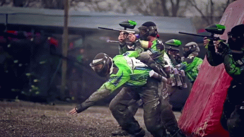
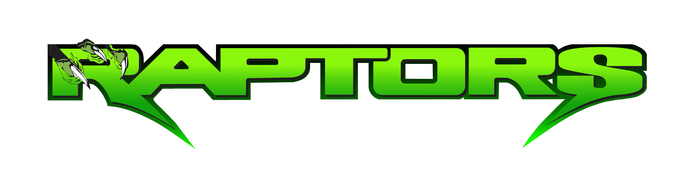

Trabalhando com mídias
Neste capítulo vamos conhecer as tags de mídia. Uma boa utilização de mídias no HTML poderão enriquecer a experiência do usuário no site.
<img> - Esta tag é usada para incorporar imagens em uma página HTML. Ela permite que você exiba imagens em seu site, especificando o atributo `src` (source) para o URL da imagem.
<audio> - A tag <audio> é usada para incorporar áudio em uma página HTML. Você pode especificar a origem do áudio usando o atributo `src` e adicionar controles de reprodução usando o atributo `controls`.
<video> - A tag <video> é semelhante à tag <audio>, mas é usada para incorporar vídeos. Você pode especificar o vídeo usando o atributo `src` e adicionar controles de reprodução usando o atributo `controls`.
<track> - A tag <track> é usada para adicionar legendas a um vídeo HTML. Você pode especificar o arquivo de legenda usando o atributo `src` e definir o idioma usando o atributo `srclang`.
<iframe> - A tag <iframe> permite incorporar outro documento HTML em sua página, geralmente usado para incorporar conteúdo de outras páginas da web. Você pode especificar a origem usando o atributo `src`.
<img>
Gun fight - Raptors Paintball (jpg) Break out (gif)
 Imagem com Fundo Transparente (png)
 Imagem em Vetor (svg)
<audio>
<video>
<track>
<iframe>
" Local onde foi disputado este campeonato Brasileiro de X-ball em 2018. Raptors Team - MG vs Renegados - BA.